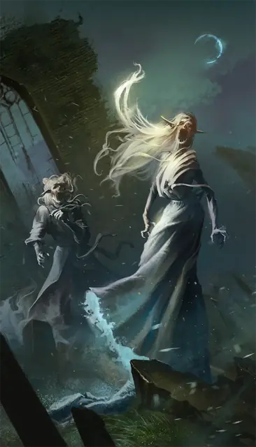

Банши
Banshee
Средняя Нежить, Хаотичная Злая

Класс Защиты 12 Инициатива +2 (12)
Хиты 54 (12к8)
Скорость 5 футов, Полёта 40 футов (парит)
| мод | спас | ||
|---|---|---|---|
| СИЛ | 1 | −5 | −5 |
| ЛОВ | 14 | +2 | +2 |
| ТЕЛ | 10 | +0 | +0 |
| мод | спас | ||
|---|---|---|---|
| ИНТ | 12 | +1 | +1 |
| МДР | 11 | +0 | +2 |
| ХАР | 17 | +3 | +3 |
Сопротивление урону Дробящий, Колющий, Рубящий, Звук, Кислота, Огонь, Электричество
Иммунитеты Некротический, Холод, Яд; Испуганный, Истощение, Окаменевший, Опрокинутый, Опутанный, Отравленный, Очарованный, Парализованный, Схваченный
Чувства Тёмное зрение 60 футов, пассивное Восприятие 10
Языки Общий, Эльфийский
Опасность 4 (1 100 опыта; БВ +2)
Особенности
Обнаружение жизни. Банши магическим образом чувствует направление, в котором находятся существа, кроме Конструктов и Нежити, в пределах 1 мили от себя.
Бестелесное перемещение. Банши может перемещаться через других существ и объекты, как через Труднопроходимую местность. Если банши заканчивает свой ход внутри объекта, то получает 5 (1к10) Силового урона.
Действия
Мультиатака. Банши совершает две атаки Разлагающим касанием и использует Устрашение.
Разлагающее касание. Бросок рукопашной атаки: +5, досягаемость 5 фт. Попадание: 7 (1к8 + 3) Некротического урона.
Устрашение. Спасбросок Мудрости: Сл 13, одно видимое банши в пределах 60 футов существо, видящее банши. Провал: Цель становится Испуганной до начала следующего хода банши. Успех: Цель невосприимчива к Устрашению этой банши в следующие 24 часа.
Смертный вопль (1/день). Банши издаёт скорбный вопль, если не находится на солнечном свету. Спасбросок Телосложения: Сл 13, каждое существо в пределах 30 футов, могущее слышать вопль, за исключением Конструктов и Нежити. Провал: Если у цели 25 Хитов и меньше, её Хиты падают до 0. Иначе цель получает 10 (3к6) Психического урона.
Бонус мастерства +2
Среда обитания Любая
Сокровища Реликварные
Банши
Воющая предвестница смерти
Банши — духи, одержимые вечной горечью и скорбью, вестницы рока и проклятие для живых. Эти легендарные призраки убьют любое существо, которое увидит их или услышит зловещий вопль. Любая измученная душа может восстать в виде банши, а в некоторых эльфийских культурах существует пугающее предание, что любой, кто попытается спрятать или уничтожить красоту — естественную или иную, — рискует стать после смерти этой нежитью.
К появлению этого призрака может привести множество ужасных обстоятельств. Совершите бросок по таблице «Печаль банши» для вдохновения или выберите сами, как душевная боль банши влияет на её поведение.
Печаль банши
| 1к6 | Терзания банши вынуждают её… |
| 1 | Появляться перед смертью члена семьи. |
| 2 | Посещать место своей казни. |
| 3 | Посещать могилу бывшего возлюбленного и оплакивать его гибель. |
| 4 | Предвещать бедствия или трагедии. |
| 5 | Искать способ вернуть украденное сокровище. |
| 6 | Убивать тех, кто посмел быть прекраснее неё при жизни. |